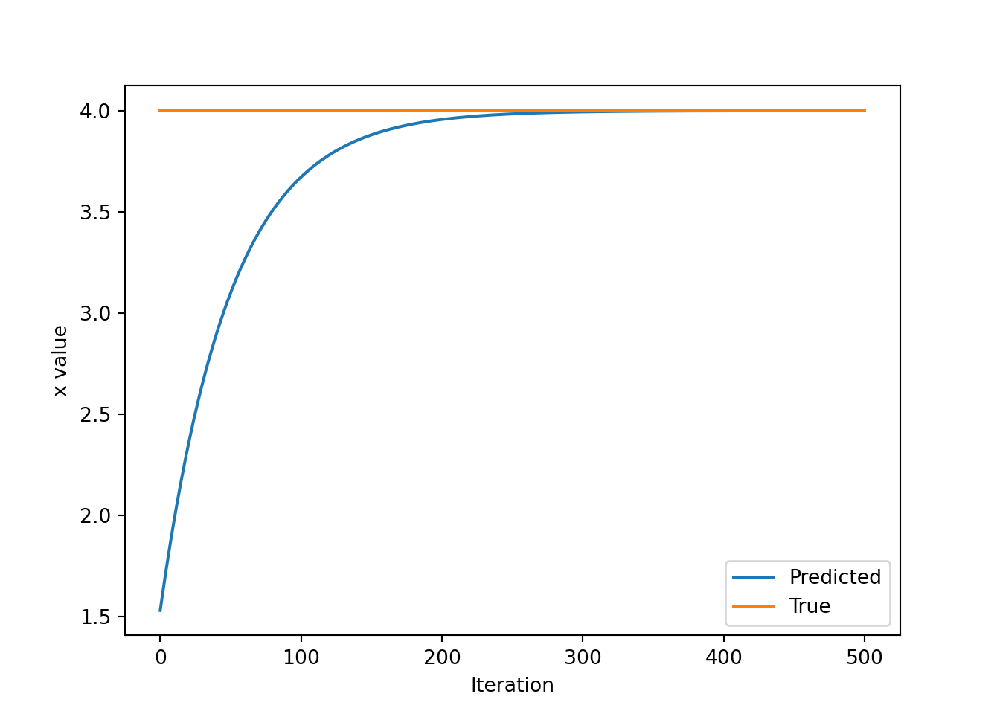

4 Introduction to PyTorch
Acknowledgement: Lab materials on PyTorch are developed on Software Lab 1 of MIT Introduction to Deep Learning.
4.1 Install PyTorch
PyTorch is a popular deep learning library known for its flexibility and ease of use.
Let's start by installing PyTorch. There are a few options to install and run PyTorch.
Option 1: Install and run PyTorch locally.
Depending on operating system (OS), Python version and availability of cuda-enabled GPUs, you can find the install command on https://pytorch.org/get-started/locally/ and install using pip.
For example, on Windows OS with CPU only, the install command is:
Option 2: Use Google Colab
Another option for accessing free GPUs is by using Google Colab, which is an alternative to installing Python on your own computer.
https://colab.research.google.com/
You can verify if PyTorch is installed successfully by running:
## 2.6.0+cpuIf it is successful, continue to load a couple of dependencies which will be useful for this lab.
4.2 What is PyTorch?
PyTorch is a machine learning library. At its core, PyTorch provides an interface for creating and manipulating tensors. A tensor is a multi-dimensional array where the number of dimensions is known as its rank.
- A rank-0 tensor is just a single number, or a scalar
- A rank-1 tensor is also called a vector
- A rank-2 tensor is also called a matrix
PyTorch provides the ability to perform computation on these tensors, define neural networks, and train them efficiently.
The shape of a PyTorch tensor defines its number of dimensions and the size of each dimension. The ndim or dim of a PyTorch tensor provides the number of dimensions (n-dimensions), and you can also think of this as the tensor's order or degree.
Let's start by creating some tensors and inspecting their properties:
integer = torch.tensor(1234)
decimal = torch.tensor(3.14159265359)
print(f"`integer` is a {integer.ndim}-d Tensor: {integer}")## `integer` is a 0-d Tensor: 1234## `decimal` is a 0-d Tensor: 3.1415927410125732Vectors and lists can be used to create 1-d tensors:
fibonacci = torch.tensor([1, 1, 2, 3, 5, 8])
count_to_100 = torch.tensor(range(100))
print(f"`fibonacci` is a {fibonacci.ndim}-d Tensor with shape: {fibonacci.shape}")## `fibonacci` is a 1-d Tensor with shape: torch.Size([6])## `count_to_100` is a 1-d Tensor with shape: torch.Size([100])Next, let’s create 2-d (i.e., matrices) and higher-rank tensors. In image processing and computer vision, we will use 4-d Tensors with dimensions corresponding to batch size, number of color channels, image height, and image width.
### Defining higher-order Tensors
'''TODO: Define a 2-d Tensor'''
matrix = # TODO
assert isinstance(matrix, torch.Tensor), "matrix must be a torch Tensor object"
assert matrix.ndim == 2
'''TODO: Define a 4-d Tensor.'''
# Use torch.zeros to initialize a 4-d Tensor of zeros with size 10 x 3 x 256 x 256.
# You can think of this as 10 images where each image is RGB 256 x 256.
images = # TODO
assert isinstance(images, torch.Tensor), "images must be a torch Tensor object"
assert images.ndim == 4, "images must have 4 dimensions"
assert images.shape == (10, 3, 256, 256), "images is incorrect shape"
print(f"images is a {images.ndim}-d Tensor with shape: {images.shape}")matrix = torch.tensor([[1, 1, 1], [2,2,2]]) #An example of 2-d tensor
images = torch.tensor(torch.zeros(10,3,256,256))
print(f"images is a {images.ndim}-d Tensor with shape: {images.shape}")## images is a 4-d Tensor with shape: torch.Size([10, 3, 256, 256])As you have seen, the shape of a tensor provides the number of elements in each tensor dimension. The shape is quite useful, and we'll use it often. You can also use slicing to access subtensors within a higher-rank tensor:
row_vector = matrix[1]
column_vector = matrix[:, 1]
scalar = matrix[0, 1]
print(f"`row_vector`: {row_vector}")## `row_vector`: tensor([2, 2, 2])## `column_vector`: tensor([1, 2])## `scalar`: 14.3 Basic computations on Tensors
Next we'll do some calculations. First, we'll create two tensors that have a constant value then add them together.
a = torch.tensor(15)
b = torch.tensor(61)
# add the two constants together and print
c1 = torch.add(a, b)
c2 = a + b # PyTorch overrides the "+" operation so that it is able to act on Tensors
print(f"c1: {c1}")## c1: 76## c2: 76We can repeat this exercise with rank-2 tensors now and also explore some other computations.
# create constant tensors
a = torch.tensor([[1, 2, 3],[4, 5, 6]])
b = torch.tensor([[6, 5, 4],[3, 2, 1]])
# add them together and print
c1 = torch.add(a, b)
print(f"c1: {c1}")## c1: tensor([[7, 7, 7],
## [7, 7, 7]])## c2: tensor([[ 6, 10, 12],
## [12, 10, 6]])4.4 Neural networks in PyTorch
We can also define neural networks in PyTorch. PyTorch uses torch.nn.Module, which serves as a base class for all neural network modules in PyTorch and thus provides a framework for building and training neural networks.
Let's consider the example of a simple perceptron defined by just one dense (aka fully-connected or linear) layer: \(y = \sigma(Wx + b)\), where \(W\) represents a matrix of weights, \(b\) is a bias, \(x\) is the input, \(\sigma\) is the sigmoid activation function, and \(y\) is the output.

In PyTorch, we define layers using torch.nn.Module, which provides a way to create and organise the building blocks of a neural network. To create a custom layer, we define a new class that is based on nn.Module. Inside this class, we specify the layer's parameters as attributes and implement a function called forward. The forward function defines how the input data is processed by this layer during the forward pass.
Every time we create a new type of layer, we need to define what happens to the input in the forward function. This ensures that our layer performs the correct computation at each step of training or inference.
Let's write a dense layer class to implement a perceptron defined above.
### Defining a dense layer
# num_inputs: number of input nodes
# num_outputs: number of output nodes
# x: input to the layer
class OurDenseLayer(torch.nn.Module):
def __init__(self, num_inputs, num_outputs):
super(OurDenseLayer, self).__init__()
# Define and initialise parameters: a weight matrix W and bias b
# Note that the parameter initialise is random!
self.W = torch.nn.Parameter(torch.randn(num_inputs, num_outputs))
self.bias = torch.nn.Parameter(torch.randn(num_outputs))
def forward(self, x):
'''TODO: define the operation for z (hint: use torch.matmul).'''
z = # TODO
'''TODO: define the operation for out (hint: use torch.sigmoid).'''
y = # TODO
return yclass OurDenseLayer(torch.nn.Module):
def __init__(self, num_inputs, num_outputs):
super(OurDenseLayer, self).__init__()
self.W = torch.nn.Parameter(torch.randn(num_inputs, num_outputs))
self.bias = torch.nn.Parameter(torch.randn(num_outputs))
def forward(self, x):
z = torch.matmul(x, self.W) + self.bias
y = torch.sigmoid(z)
return yNow, let's test the output of our layer.
# Define a layer and test the output
num_inputs = 2
num_outputs = 3
layer = OurDenseLayer(num_inputs, num_outputs)
x_input = torch.tensor([[1, 2.]])
y = layer(x_input)
print(f"input shape: {x_input.shape}")## input shape: torch.Size([1, 2])## output shape: torch.Size([1, 3])## output result: tensor([[0.0215, 0.8477, 0.6351]], grad_fn=<SigmoidBackward0>)Conveniently, PyTorch has defined a number of nn.Modules (or Layers) that are commonly used in neural networks, for example a nn.Linear or nn.Sigmoid module.
Now, instead of using a single Module to define our simple neural network, we'll use the nn.Sequential module from PyTorch and a single nn.Linear layer to define our network. With the Sequential API, you can readily create neural networks by stacking together layers like building blocks.
### Defining a neural network using the PyTorch Sequential API
# define the number of inputs and outputs
n_input_nodes = 2
n_output_nodes = 3
# Define the model
'''TODO: Use the Sequential API to define a neural network with a
single linear (dense!) layer, followed by non-linearity to compute z'''
model = nn.Sequential( ''' TODO ''' )We've defined our model using the Sequential API. Now, we can test it out using an example input:
# Test the model with example input
x_input = torch.tensor([[1, 2.]])
model_output = model(x_input)
print(f"input shape: {x_input.shape}")## input shape: torch.Size([1, 2])## output shape: torch.Size([1, 3])## output result: tensor([[0.0215, 0.8477, 0.6351]], grad_fn=<SigmoidBackward0>)With PyTorch, we can create more flexible models by building on nn.Module (technically, it is known as subclass nn.Module, inheriting the properties and behaviors of the base class, i.e. nn.Module in this case). The nn.Module class allows us to group layers together flexibly to define new architectures.
As we saw earlier with OurDenseLayer, we can subclass nn.Module to create a class for our model. Inside this class, we define the layers we need and specify how data moves through them using the forward function. This approach gives us the flexibility to create custom layers, custom training loops, custom activation functions, and entirely new model architectures. Let's define the same neural network model as above (i.e., Linear layer with an activation function after it), now using a class-based approach and PyTorch's built-in linear layer from nn.Linear.
### Defining a model using subclassing
class LinearWithSigmoidActivation(nn.Module):
def __init__(self, num_inputs, num_outputs):
super(LinearWithSigmoidActivation, self).__init__()
'''TODO: define a model with a single Linear layer and sigmoid activation.'''
self.linear = '''TODO: linear layer'''
self.activation = '''TODO: sigmoid activation'''
def forward(self, inputs):
linear_output = self.linear(inputs)
output = self.activation(linear_output)
return outputclass LinearWithSigmoidActivation(nn.Module):
def __init__(self, num_inputs, num_outputs):
super(LinearWithSigmoidActivation, self).__init__()
self.linear = nn.Linear(num_inputs, num_outputs)
self.activation = nn.Sigmoid()
def forward(self, inputs):
linear_output = self.linear(inputs)
output = self.activation(linear_output)
return outputLet's test out our new model, using an example input, setting n_input_nodes=2 and n_output_nodes=3 as before.
n_input_nodes = 2
n_output_nodes = 3
model = LinearWithSigmoidActivation(n_input_nodes, n_output_nodes)
x_input = torch.tensor([[1, 2.]])
y = model(x_input)
print(f"input shape: {x_input.shape}")## input shape: torch.Size([1, 2])## output shape: torch.Size([1, 3])## output result: tensor([[0.6355, 0.2081, 0.3705]], grad_fn=<SigmoidBackward0>)4.5 Automatic Differentiation in PyTorch
In PyTorch, torch.autograd is used for automatic differentiation, which is critical for training deep learning models with backpropagation.
We will use the PyTorch .backward() method to trace operations for computing gradients. On a tensor, the requires_grad attribute controls whether autograd should record operations on that tensor. When a forward pass is made through the network, PyTorch records all the operations that occur; then, to compute the gradient, the backward() method is called to perform backpropagation.
Let's compute the gradient of $ y = x^2 $:
### Gradient computation
# y = x^2
# Example: x = 3.0
x = torch.tensor(3.0, requires_grad=True)
y = x ** 2
y.backward() # Compute the gradient
dy_dx = x.grad
print("dy_dx of y=x^2 at x=3.0 is: ", dy_dx)## dy_dx of y=x^2 at x=3.0 is: tensor(6.)In training neural networks, we use differentiation and stochastic gradient descent (SGD) to optimise a loss function. Now that we have a sense of how PyTorch's autograd can be used to compute and access derivatives, we will look at an example where we use automatic differentiation and SGD to find the minimum of $ L=(x-x_f)^2 $. Here \(x_f\) is a variable for a desired value we are trying to optimize for; \(L\) represents a loss that we are trying to minimize. While we can clearly solve this problem analytically ($ x_{min}=x_f $), considering how we can compute this using PyTorch's autograd sets us up nicely for future activities where we use gradient descent to optimise entire neural network losses.
### Function minimization with autograd and gradient descent
# Initialize a random value for our intial x
x = torch.randn(1)
print(f"Initializing x={x.item()}")
learning_rate = 1e-2 # Learning rate
history = []
x_f = 4 # Target value
# We will run gradient descent for a number of iterations. At each iteration, we compute the loss,
# compute the derivative of the loss with respect to x, and perform the update.
for i in range(500):
x = torch.tensor([x], requires_grad=True)
# TODO: Compute the loss as the square of the difference between x and x_f
loss = # TODO
# Backpropagate through the loss to compute gradients
loss.backward()
# Update x with gradient descent
x = x.item() - learning_rate * x.grad
history.append(x.item())
# Plot the evolution of x as we optimize toward x_f
plt.plot(history)
plt.plot([0, 500], [x_f, x_f])
plt.legend(('Predicted', 'True'))
plt.xlabel('Iteration')
plt.ylabel('x value')
plt.show()## Initializing x=1.479282259941101learning_rate = 1e-2 # Learning rate
history = []
x_f = 4 # Target value
for i in range(500):
x = torch.tensor([x], requires_grad=True)
# Compute the loss as the square of the difference between x and x_f
loss = (x-x_f) ** 2
# Backpropagate through the loss to compute gradients
loss.backward()
# Update x with gradient descent
x = x.item() - learning_rate * x.grad
history.append(x.item())
# Plot the evolution of x as we optimize toward x_f
plt.plot(history)
plt.plot([0, 500], [x_f, x_f])
plt.legend(('Predicted', 'True'))
plt.xlabel('Iteration')
plt.ylabel('x value')
plt.show()
Now, we have covered the fundamental concepts of PyTorch - tensors, operations, neural networks, and automatic differentiation.